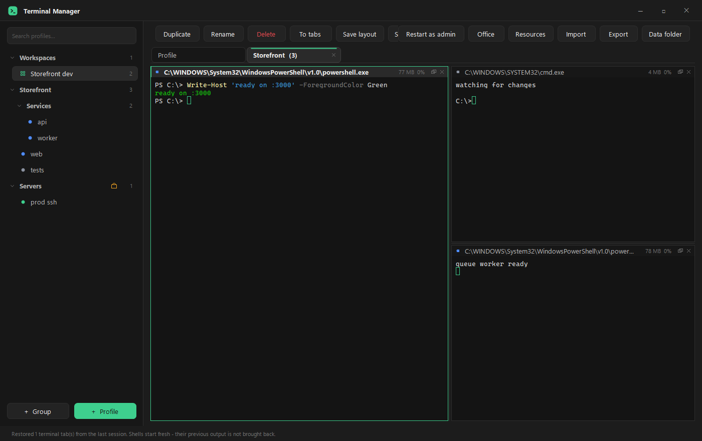
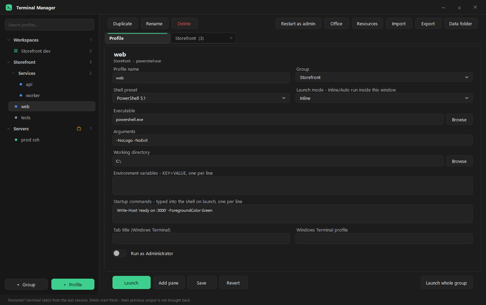
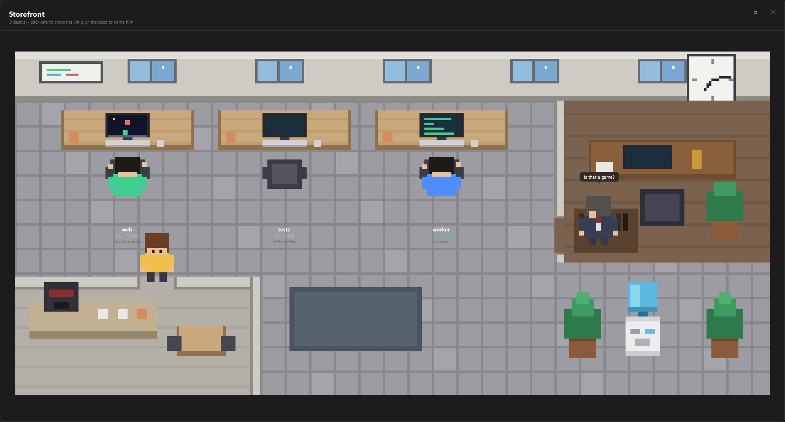
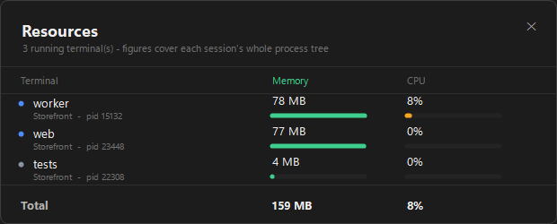

Save your shells as profiles, group them by client or project, and open them as a grid of live panes — the way an IDE does it, without the IDE.
Simpan shell-mu sebagai profil, kelompokkan per klien atau proyek, lalu buka sebagai grid pane yang semuanya hidup — seperti di IDE, tanpa perlu IDE-nya.
One installer, ~400 KB. No runtime, no dependencies. Windows 10 1809 or newer.
Satu installer, ~400 KB. Tanpa runtime, tanpa dependensi. Windows 10 1809 atau lebih baru.

One group, three live shells, one tab. Drag a pane by its header to rearrange the grid.
Satu grup, tiga shell hidup, satu tab. Seret pane lewat header-nya untuk menyusun ulang grid.
The terminals are real ones. Terminal Manager talks to the Windows pseudo console, so colour,
cursor control, resizing and full-screen programs like vim, htop or an
ssh password prompt behave exactly as they do in a normal console.
Terminalnya asli. Terminal Manager berbicara langsung dengan Windows pseudo console, jadi warna,
kontrol kursor, resize, dan program layar penuh seperti vim, htop, atau
prompt password ssh berperilaku persis seperti di konsol biasa.
A profile is one shell: program, arguments, folder, environment, startup commands. Groups nest, and can be locked so nothing inside them moves by accident.
Satu profil adalah satu shell: program, argumen, folder, environment, startup command. Grup bisa bersarang, dan bisa dikunci supaya isinya tidak berpindah tanpa sengaja.
Split right or down, drag a pane onto another pane's edge to move it, drop it in the middle to swap. Moving a pane never restarts the shell.
Pecah ke kanan atau ke bawah, seret pane ke tepi pane lain untuk memindahkannya, jatuhkan di tengah untuk menukar. Memindahkan pane tidak pernah me-restart shell-nya.
Terminals of the same group gather in one tab. Clicking a profile from another group opens its own tab instead of hiding the first.
Terminal dari grup yang sama berkumpul di satu tab. Klik profil dari grup lain, tab baru yang terbuka — yang pertama tidak disembunyikan.
Close with four panes open and they return in the same shape. Layouts can also be saved by name as workspaces.
Tutup dengan empat pane terbuka, semuanya kembali dengan susunan yang sama. Tata letak juga bisa disimpan bernama sebagai workspace.
Every session runs in its own job object, so the figures cover the whole process tree — the dev server too, not just the shell.
Tiap sesi berjalan di job object sendiri, jadi angkanya mencakup seluruh pohon proses — dev server-nya juga, bukan cuma shell-nya.
Closing a pane ends the process and everything it started. An npm run dev cannot survive the tab that launched it.
Menutup pane menghentikan prosesnya beserta semua anaknya. npm run dev tidak bisa lolos dari tab yang menjalankannya.

One group is one office, one profile is one character. What each of them does is driven by the real CPU of its terminal — not by a script.
Satu grup satu kantor, satu profil satu karakter. Tingkah tiap karakter digerakkan oleh CPU sesungguhnya dari terminalnya — bukan skrip.

| On screen | Di layar | Meaning | Artinya |
|---|---|---|---|
| Typing fast, flushed, sweating | Mengetik cepat, memerah, berkeringat | over 40% CPU — and it keeps going | CPU di atas 40% — dan terus jalan |
| A bubble with a program name | Bubble berisi nama program | that terminal is running claude, node, git… |
terminal itu sedang menjalankan claude, node, git… |
| Water cooler, coffee room, a game, a chat | Galon air, ruang kopi, main game, mengobrol | quiet for about six seconds | sekitar enam detik tanpa aktivitas |
| The boss walks over | Bosnya menghampiri | somebody has been gaming too long | ada yang kelamaan main game |
| Asleep at the desk | Tertidur di meja | an hour with nothing to do | satu jam tanpa pekerjaan |
| Sparks and a grumble | Percikan api dan gerutuan | you clicked them — fifteen minutes of desk time, no breaks | kamu mengkliknya — lima belas menit di meja, tanpa istirahat |
After 18:00 the lights go down and the office runs at night. Click the boss to give him a name.
Lewat jam 18:00 lampunya meredup dan kantornya berganti suasana malam. Klik bosnya untuk memberi dia nama.
The status bar shows the focused terminal's memory and CPU. Resources (Ctrl+Shift+U) lists them all side by side, with a bar each, the group and process id underneath, and a total at the foot.
Status bar menampilkan memori dan CPU terminal yang sedang fokus. Resources (Ctrl+Shift+U) menampilkan semuanya berdampingan, masing-masing dengan bar, nama grup dan process id di bawahnya, serta total di kakinya.
Hidden tabs are not sampled, so watching costs nothing while you are not looking.
Tab yang tersembunyi tidak disampel, jadi pemantauan tidak membebani saat tidak dilihat.

Download TerminalManagerSetup.exe and run it. It installs per user by default, into
%LOCALAPPDATA%\Programs\TerminalManager, so Windows raises no UAC prompt. Your
profiles.json is created on first run — it never ships inside the installer.
Unduh TerminalManagerSetup.exe lalu jalankan. Secara default dipasang per pengguna, ke
%LOCALAPPDATA%\Programs\TerminalManager, jadi Windows tidak memunculkan prompt UAC.
profiles.json dibuat saat pertama dijalankan — tidak pernah ikut di dalam installer.
TerminalManagerSetup.exe /S install with the defaults TerminalManagerSetup.exe /S /allusers install into Program Files (needs admin) TerminalManagerSetup.exe /S /dir:"C:\path" choose the folder uninstall.exe /uninstall /S remove silently, keep profiles uninstall.exe /uninstall /S /purge remove silently, delete profiles too
TerminalManagerSetup.exe /S pasang dengan pengaturan default TerminalManagerSetup.exe /S /allusers pasang ke Program Files (butuh admin) TerminalManagerSetup.exe /S /dir:"C:\path" tentukan foldernya uninstall.exe /uninstall /S copot senyap, profil disimpan uninstall.exe /uninstall /S /purge copot senyap, profil ikut dihapus